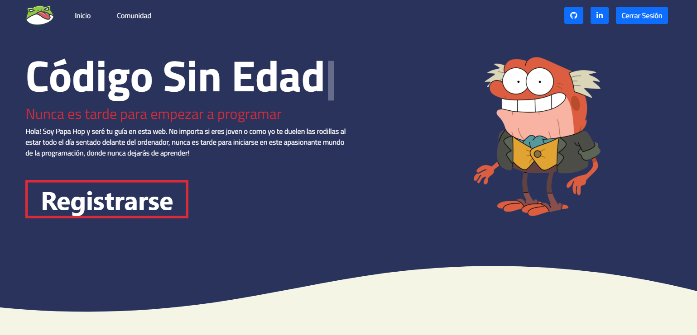
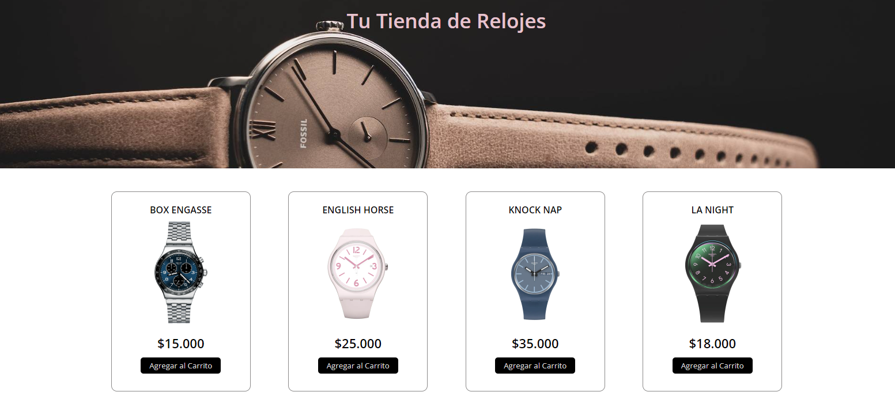
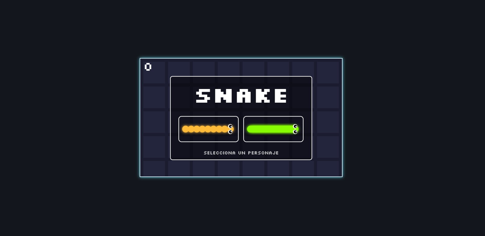

Mis proyectos recientes
Estos son algunos proyectos que he creado recientemente





Llegué un poco "tarde" al mundo de la programación (aunque realmente nunca es tarde 🤘🏽👴🏽), pero sin duda encontré mi vocación y mi pasión. Desde que me inicié aprendiendo HTML y CSS prácticamente no ha pasado ni un día que no haya programado, leído, estudiado o visto algo relacionado con este extenso y maravilloso mundo. La programación y la Ciberseguridad son ya, y lo seguirán siendo, parte importante de mi vida.
Desarrollo Web
Conocimientos de Python, especialmente en el contexto de Flask, para construir aplicaciones web dinámicas y escalables.También JavaScript, HTML y CSS, que me permite diseñar interfaces de usuario atractivas y funcionales. Además, aprovecho herramientas como Bootstrap para agilizar el desarrollo y mejorar la experiencia del usuario. Mi comprensión de bases de datos se destaca con SQL, y como bibliotecas modernas utilizo React para construir interfaces interactivas y eficientes.
Ciberseguridad
Me apasiona explorar las complejidades de proteger sistemas y datos contra ataques cibernéticos, lo que me ha llevado a desarrollar un interés particular en roles como SOC Analyst y Cybersecurity Analyst. Estoy comprometido a mantenerme al tanto de las últimas tendencias y técnicas en el campo de la ciberseguridad, con el objetivo de contribuir de manera significativa a la protección de la información y los activos digitales de las organizaciones. Mi dedicación a esta disciplina me impulsa a continuar aprendiendo y creciendo profesionalmente en el ámbito de la seguridad informática.
Estudiante
Como estudiante comprometido en convertirme en un completo desarrollador Full Stack, mi día a día está marcado por el estudio y la práctica constante. Mi formación en 4Geeks Academy ha sentado las bases sólidas, pero no me detengo ahí. Todos los días dedico tiempo a profundizar mis conocimientos, utilizando recursos en línea como Codecademy, FreeCodeCamp y W3Schools, entre otros. Estas plataformas no solo me proporcionan un aprendizaje estructurado, sino que también me ofrecen la oportunidad de aplicar lo que he aprendido en proyectos prácticos. Mi enfoque disciplinado y mi búsqueda continua de conocimiento son mis pilares fundamentales.